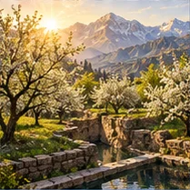
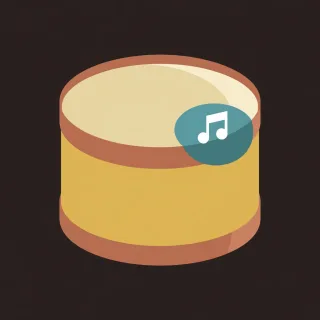
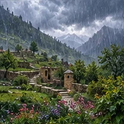

The whole library
Handpan pieces, songs and drills for D Kurd
10 patterns for the Gear4music DISC 10-note D Kurd handpan. Each page has the number notation bar by bar, the tempo and time signature, the notes it uses, and a link to play or learn it in the browser.
The pan's notes are D3, A3, B♭3, C4, D4, E4, F4, G4, A4, C5, with the ding on D3 and A at 440 Hz. Melodies from other keys are moved so that every note lands on these ten.
Songs 9
Riffs and melodies from well-known songs, moved onto the pan's ten notes.
 The Sound of SilencePaul Simon's song in a spacious D-minor handpan adaptation, with five verse cycles and a quiet close.88 BPM · 4/4 · 92 bars
The Sound of SilencePaul Simon's song in a spacious D-minor handpan adaptation, with five verse cycles and a quiet close.88 BPM · 4/4 · 92 bars- Let It BeThe Beatles' ballad moved from C to F, with verses, refrain, an original instrumental break and a resolved ending.76 BPM · 4/4 · 68 bars

Feeling GoodA D-minor handpan adaptation of the Newley/Bricusse standard, with open calls and a rolling triplet groove.72 BPM · 6/8 · 64 bars- Game of Thrones (Main Title)Ramin Djawadi's main-title theme in D minor, with a circling opening, two theme statements and a spare ending.112 BPM · 3/4 · 68 bars
 Day One (Interstellar)Hans Zimmer's Day One, identified from the Interstellar soundtrack, in a provisional A-minor handpan adaptation.80 BPM · 4/4 · 64 bars
Day One (Interstellar)Hans Zimmer's Day One, identified from the Interstellar soundtrack, in a provisional A-minor handpan adaptation.80 BPM · 4/4 · 64 bars In the EndLinkin Park's piano riff moved down to D minor, over D minor, C and B-flat.105 BPM · 4/4 · 39 bars
In the EndLinkin Park's piano riff moved down to D minor, over D minor, C and B-flat.105 BPM · 4/4 · 39 bars- Soltane GhalbhaAnoushirvan Rohani's waltz, associated with Aref, in D minor with both melodic sections and an original handpan accompaniment.132 BPM · 3/4 · 108 bars

Seven Nation ArmyThe White Stripes riff in D minor: 4 4 6 4 3 2 1, then the ding joins for the chorus.124 BPM · 4/4 · 16 bars
Nothing Else Matters (Intro)Metallica's intro as the picking part in A minor, for playing with a guitarist on capo 5.48 BPM · 6/8 · 28 bars
Pieces 1
Original pieces with named sections, written for this instrument.